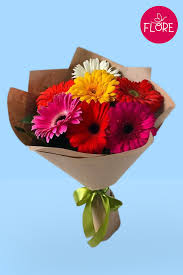
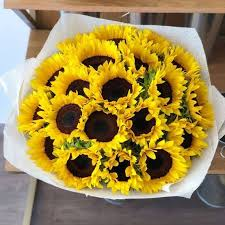
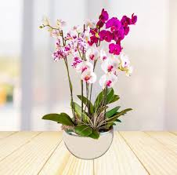

que habilidaes tiene que tener un florista
-Las florerías, o floristerías, poseen una serie de competencias clave para su éxito. Estas incluyen la habilidad de diseñar arreglos florales, la gestión de inventario y compras, el conocimiento de diferentes especies de flores, la atención al cliente y el manejo de las finanzas.
-Diseño floral:
Entender los principios del diseño, la estética, la composición y el color para crear arreglos atractivos y personalizados.
-Gestión de inventario:
Realizar la compra, almacenamiento y conservación de flores y materiales florales, teniendo en cuenta su fragilidad y corta duración.
-Conocimiento de especies:
Identificar y conocer las características de diferentes especies de flores, así como las técnicas de cuidado y mantenimiento.
-Atención al cliente:
Ser capaces de tomar pedidos, asesorar a los clientes sobre el cuidado de las flores y ofrecer un servicio de calidad.
-Manejo de finanzas:
Realizar la gestión comercial, incluyendo el cálculo de precios, las ventas y el manejo de caja.
-Adaptabilidad:
Capacidad de adaptarse a las diferentes situaciones y manejar cambios inesperados en los pedidos.
-Cuidado de las flores:
Realizar el riego, poda y almacenamiento adecuado de las flores y plantas para asegurar su frescura y duración.
-Creación de ambientes:
A través de los arreglos florales, crear ambientes agradables y estéticos en diversos espacios, como bodas, eventos y decoraciones.
-Promoción y ventas:
Realizar actividades de marketing y promoción para atraer clientes y aumentar las ventas.
-antenimiento de la tienda:
Mantener la tienda limpia, ordenada y atractiva para los clientes.
-Gestión de personal:
Coordinar y supervisar el trabajo de los empleados, en caso de tenerlos.
-Conocimientos de negocios:
Entender los aspectos básicos de la gestión de un negocio, incluyendo inventario, ventas y atención al cliente.
-Prevención de riesgos:
Conocer las medidas de prevención de riesgos laborales y ambientales para la realización de trabajos de floristería.
-Certificación de competencias:
Obtener certificaciones que validen las habilidades y conocimientos de los floristas.
-Las florerías también deben estar actualizadas sobre las últimas tendencias en diseño floral y decoración. Además, la capacitación continua en técnicas de venta, atención al cliente y manejo de productos florales es fundamental para el éxito de la empresa
precios de las flores en docena
las flores son las principales prioridades de los clientes caundo se trata de comprar antes que cualquier arreglo la eleccion
y deseo de cada una de estas biene tambien de su accesibilidad entre esas son:
$690.00 MXN. La mejor demostración de amor es con este ramo de 12 rosas rojas, un detalle clásico para sorprender a esa persona que tanto quieres y es especial para ti.
$650.00 MXN. Este ramo incluye 5 gerberas rosa fiusha, 5 rosas rosa claro, perrito de invernadero morado y mini rosa amarilla, es perfecto para regalar en su cumpleaños o sólo para alegrar su día.

$650.00. ¡No te lo pierdas, puede que queden pocos compralo ya¡

Tulipanes a un Super precio de $150 a solo $99 Cada Tulipán , No olvides enamorar a esa persona especial todos los días
Un tierno abrazo de margaritas blancas, un hermoso ramo de margaritas envieltas en papeles decorativos en tonos pasteleste producto contiene 7 tallos de margaritas 2 envolturas decorativas a tan solo $350

Paquete de Lilium Blanca. $ 240.00 MXN. Precio habitual Precio de oferta $ 240.00 MXN compralos ya que se acaban.

MULTIFLORAS
Multiflora Rosa con Líneas Blancas. $550.00.
Aromática. Multiflora Verde. $550.00.
Multiflora amarilla centro rojizo. $550.00.
Multiflora Rosa. $550.00.
Multiflora Fiusha. $550.00.
Multiflora Blanca con Centro Fiusha. $550.00.
Multiflora Amarilla. $550.00.
Multiflora Blanca. $550.00.

Planta Hortensia M10
Estás viendo Conaplor Planta Hortensia en ramo la docena llevela que se van a solo $250

Ramo de 12 Claveles
¡Es perfecto para demostrarle tu amor y celebrar cualquier ocasión especial! a solo $300

el precio varia sobre las tiendas pero en nuestra web las astroleias tiene el precio de $150

mayor informacion sobre las florerias
Las floristerías son establecimientos que se especializan en la venta de flores, plantas y productos relacionados con la decoración floral, además de ofrecer arreglos florales personalizados. La floristería también involucra el cuidado y manipulación de las flores, el diseño y los arreglos florales, la comercialización, producción, exhibición y entrega de flores.
Tipos de servicios:
Las floristerías pueden ofrecer ramos de flores, arreglos para eventos especiales (bodas, funerales, etc.), plantas de interior y exterior, y productos decorativos como jarrones y velas.
El florista:
Un florista es un profesional que tiene conocimiento sobre las diferentes especies de flores, sus cuidados, y las técnicas de diseño floral para crear arreglos personalizados.
El negocio:
Una floristería puede ser un negocio pequeño con propietario único o una empresa más grande con varios empleados y sucursales
La floricultura:
La floricultura es la disciplina que se dedica al cultivo de flores y plantas ornamentales de forma industrializada, proporcionando las flores que se utilizan en las floristerías.
La industria floral:
La industria floral es una actividad económica importante que genera ingresos tanto a nivel local como nacional, con grandes mercados de flores como el de Aalsmeer en los Países Bajos.
La cultura floral:
Las flores tienen un significado cultural y social en muchas culturas, y las floristerías juegan un papel importante en la expresión de emociones y sentimientos en ocasiones especiales como bodas, funerales, celebraciones, etc.

como hacer tu propia floreria
Para hacer una florería, debes elegir un modelo de negocio, estudiar el mercado, crear un plan de negocio, registrar tu negocio, obtener los permisos necesarios, montar la tienda, encontrar proveedores y un modelo de entrega, crear un portafolio, desarrollar una estrategia de marketing y lanzar tu negocio. También es importante tener una buena identidad de marca, un local bien ubicado (o una tienda en línea intuitiva), y brindar un buen servicio para que los clientes te recomienden.
1. Planificación y estudio de mercado:
Elige un modelo de negocio: ¿Será una tienda física, una tienda en línea, o ambas?
Realiza un estudio de mercado: Identifica tu público objetivo, la competencia y las tendencias del mercado.
Elabora un plan de negocio: Define tus metas, objetivos, estrategias de marketing, finanzas y operaciones.
2. Preparación legal y logística:
Registra tu negocio y obtén los permisos necesarios: Asegúrate de cumplir con todas las regulaciones locales y federales.
Encuentra proveedores confiables: Busca proveedores que puedan ofrecerte flores de calidad a precios competitivos.
Define un modelo de entrega: Decide cómo llegarán los productos a tus clientes (tienda, envío, etc.).
3. Diseño y montaje de la tienda:
Monta tu tienda:
Elige un local que sea adecuado para tu modelo de negocio y que transmita la imagen que quieres.
Crea un portafolio:
Ofrece una variedad de opciones de arreglos florales y plantas para diferentes ocasiones.
4. Marketing y ventas:
Desarrolla una estrategia de marketing: Utiliza diferentes canales para llegar a tu público objetivo (redes sociales, publicidad online, etc.).
Lanza tu negocio de flores: Promociona tu tienda y tus productos para atraer a los clientes.
5. Permisos y Licencias:
Obtén los permisos necesarios: Investiga los permisos y licencias requeridos para operar tu negocio en tu ubicación.
Regístrate como empresa: Registra tu negocio en la administración fiscal y otros organismos relevantes.
Consejos Adicionales:
Aprende sobre arreglos florales: Tomar cursos de floristería puede ser útil.
Considera un servicio de entrega a domicilio: Esto puede ampliar tu alcance de clientes.
Ofrece servicios personalizados: Adaptar los arreglos a las necesidades y gustos de cada cliente puede aumentar tu atractivo.
No te desanimes: Abrir un negocio requiere tiempo, esfuerzo y dedicación.
que informacion debe de llevar tu floreria para harcela mas accesible para tu publico

|
¡Bienvenidos a la florería más hermosa de México!
¿Buscas flores frescas y hermosas para decorar tu hogar o regalar a alguien especial? ¡No busques más! En nuestra florería, contamos con una amplia variedad de flores de alta calidad, cortadas frescas cada día para garantizar su belleza y durabilidad.
Nuestros productos
Flores frescas de temporada: rosas, tulipanes, girasoles, lirios y muchas más
Arreglos florales personalizados para cualquier ocasión: bodas, cumpleaños, aniversarios, funerales y más
Plantas de interior y exterior para decorar tu hogar o jardín
Flores artificiales de alta calidad para decorar tu hogar o negocio
Globos y decoraciones para fiestas y eventos
Nuestros servicios
Entrega a domicilio en todo México
Servicio de decoración para eventos y fiestas
Arreglos florales personalizados para regalos y detalles
Talleres de arreglo floral para principiantes y expertos
¿Por qué elegirnos?
Contamos con un equipo de expertos en arreglo floral con años de experiencia
Utilizamos solo las mejores flores y materiales de alta calidad
Ofrecemos precios competitivos y descuentos especiales para eventos y grandes pedidos
Nuestro servicio al cliente es amable y atento para garantizar tu satisfacción
|

promociones y arreglos
Promociones especiales
Día de la Madre: 10% de descuento en todos los arreglos florales para mamá
Día del Amor y la Amistad: Compra un arreglo floral y recibe un segundo arreglo con un 20% de descuento
Cumpleaños: Arreglo floral personalizado con una tarjeta de felicitación gratuita
Nuestros arreglos florales
Arreglos de rosas: Clásicos y elegantes, perfectos para cualquier ocasión
Arreglos de tulipanes: Coloridos y frescos, ideales para primavera y verano
Arreglos de girasoles: Alegres y soleados, perfectos para alegrar cualquier día
Arreglos de lirios: Elegantes y sofisticados, ideales para ocasiones especiales
Nuestros servicios de decoración
Decoración para bodas: Creamos un ambiente mágico y romántico para tu día especial
Decoración para fiestas: Globos, flores y decoraciones para hacer de tu fiesta un éxito
Decoración para eventos corporativos: Creamos un ambiente profesional y elegante para tus evento
Nuestros talleres
Taller de arreglo floral básico: Aprende las técnicas básicas para crear arreglos florales hermosos
Taller de arreglo floral avanzado: Aprende técnicas avanzadas para crear arreglos florales sofisticados
Taller de decoración floral para eventos: Aprende a crear decoraciones florales para eventos y fiestas
¿Qué dicen nuestros clientes?
"La florería es hermosa y el servicio es excelente. ¡Me encantó!" - Ana G.
"Los arreglos florales son preciosos y duraderos. ¡Recomiendo!" - Juan P.
"El equipo de decoración hizo un trabajo increíble en nuestra boda. ¡Gracias!" - María R.
¡Únete a nuestra comunidad!
Síguenos en redes sociales para estar al tanto de nuestras promociones y novedades
Suscríbete a nuestro boletín para recibir noticias y consejos sobre flores y decoración
Visítanos en nuestra tienda para conocer nuestros productos y servicios
¡Esperamos verte pronto en nuestra florería!
Nuestros productos destacados
Flores exóticas: Disfruta de nuestra selección de flores exóticas y raras, perfectas para agregar un toque especial a tus arreglos
Flores sostenibles: Nuestras flores sostenibles son cultivadas de manera responsable y respetuosa con el medio ambiente
Flores secas: Nuestras flores secas son perfectas para decorar y agregar un toque de elegancia a cualquier espacio
Velas y fragancias: Disfruta de nuestras velas y fragancias inspiradas en las flores y la naturaleza
Nuestros servicios de entrega
Entrega exprés: Entrega rápida y segura en todo México
Entrega programada: Programa tu entrega para que llegue en el momento perfecto
Entrega internacional: Envíamos flores a cualquier parte del mundo
Nuestros consejos y tutoriales
Cómo cuidar tus flores: Aprende a mantener tus flores frescas y hermosas por más tiempo
Cómo crear un arreglo floral: Tutorial paso a paso para crear un arreglo floral hermoso
Cómo decorar con flores: Consejos y ideas para decorar tu hogar y eventos con flores
Nuestros eventos y promociones
Día de la Primavera: Celebra la primavera con nosotros y disfruta de descuentos especiales en flores y arreglos
Noches de flores: Disfruta de nuestras noches de flores con música en vivo y degustaciones de vino y queso
Clase de arreglo floral: Aprende a crear arreglos florales con nuestros expertos
Nuestros reconocimientos y certificaciones
Certificación de calidad: Nuestros productos y servicios están certificados por organizaciones reconocidas
Reconocimiento de la industria: Hemos sido reconocidos como una de las mejores florerías de México
¿Qué puedes esperar de nosotros?
Atención personalizada: Nuestro equipo está aquí para ayudarte y asesorarte en todo lo que necesites
Productos de alta calidad: Nuestros productos son seleccionados con cuidado para garantizar su calidad y frescura
Servicio eficiente: Nuestro equipo trabaja con eficiencia para garantizar que tus pedidos sean entregados a tiempo y de manera satisfactoria
Contáctanos!
Teléfono:[4422822009]
Correo electrónico: [floreria09#gmail.com]
Redes sociales: [mane0112(intagram)]
Nuestros productos
Flores frescas: Rosas, tulipanes, girasoles, lirios, orquídeas y muchas más
Arreglos florales: Clásicos, modernos, personalizados y más
Plantas de interior: Plantas de hoja, plantas suculentas, plantas de flor y más
Plantas de exterior: Plantas de jardín, plantas de patio, plantas de balcón y más
Flores artificiales: Flores de seda, flores de plástico, flores de papel y más
Velas y fragancias: Velas aromáticas, difusores de aroma, aceites esenciales y más
Nuestros servicios
Entrega a domicilio: Entrega rápida y segura en todo México
Servicio de decoración: Decoración para eventos, fiestas y espacios
Arreglos florales personalizados: Arreglos florales hechos a medida para cualquier ocasión
Talleres y clases: Talleres de arreglo floral, clases de jardinería y más
Asesoramiento: Asesoramiento en decoración, jardinería y cuidado de plantas
Nuestros eventos y promociones
Día de la Madre: Descuentos especiales en arreglos florales y plantas para mamá
Día del Amor y la Amistad: Arreglos florales y regalos románticos para el día de San Valentín
Cumpleaños: Arreglos florales y regalos personalizados para cumpleaños
Bodas: Decoración y arreglos florales para bodas
Funerales: Arreglos florales y coronas para funerales
Nuestros consejos y tutoriales
Cómo cuidar tus plantas: Consejos para mantener tus plantas sanas y felices
Cómo crear un arreglo floral: Tutorial paso a paso para crear un arreglo floral hermoso
Cómo decorar con flores: Consejos y ideas para decorar tu hogar y eventos con flores
Cómo mantener tus flores frescas: Consejos para mantener tus flores frescas por más tiempo
Nuestros reconocimientos y certificaciones
Certificación de calidad: Nuestros productos y servicios están certificados por organizaciones reconocidas
Reconocimiento de la industria: Hemos sido reconocidos como una de las mejores florerías de México
Miembro de asociaciones: Somos miembros de asociaciones de floristería y jardinería
Qué dicen nuestros clientes?
Testimonios: Lee los testimonios de nuestros clientes satisfechos
Reseñas: Lee las reseñas de nuestros clientes en nuestras redes sociales
¡Únete a nuestra comunidad!
Redes sociales: Síguenos en nuestras redes sociales para estar al tanto de nuestras promociones y novedades
Boletín: Suscríbete a nuestro boletín para recibir noticias y consejos sobre flores y jardinería
Eventos: Asiste a nuestros eventos y talleres para aprender y divertirte
ejemplos de florerias y su reseñas
Dyckman Flowershop: Ubicada en Inwood, esta florería ofrece arreglos florales personalizados y servicio de entrega local. Tiene una calificación de 4,8 estrellas con más de 4 reseñas.
Dirección: 161 Dyckman St, New York, NY 10040
Horario: Abierta las 24 horas
Alta Floristería: Situada en el Bronx, ofrece arreglos florales y servicios de entrega local. Tiene una calificación de 4,9 estrellas con más de 120 reseñas.
Dirección: 1114 Westchester Ave, Bronx, NY 10459
Teléfono: 347-963-9595
Horario: Lunes a sábado de 9am a 8pm, domingo de 9am a 4pm
RESEÑA:
Dyckman Flowershop: 4,8 estrellas (más de 4 reseñas). Conocida por sus arreglos florales personalizados y servicio de entrega local, ofrece una amplia variedad de flores frescas para ocasiones especiales.
Paradise Florist Corp.: Ubicada en Washington Heights, ofrece arreglos florales y servicios de entrega. Tiene una calificación de 4,5 estrellas con más de 38 reseñas.
Dirección: 628 W 207th St, New York, NY 10034
Teléfono: 212-933-375
Horario: Lunes a sábado de 9am a 9pm, domingo de 9am a 8pm
RESEÑA:
Pascual Fresh Flowers: 5 estrellas (más de 28 reseñas). Situada en Hell’s Kitchen, ofrece arreglos florales y servicio de entrega el mismo día.
Flowers by Richard NYC: Ubicada en Midtown, ofrece arreglos florales personalizados y servicios de entrega. Tiene una calificación de 4,8 estrellas con más de 119 reseñas.
Dirección: 316 W 53rd St, New York, NY 10019
Teléfono: 212-582-3505
Horario: Lunes a viernes de 6am a 9pm, sábado y domingo de 8am a 4pm
RESEÑA:
Flowers by Richard NYC: 4,8 estrellas (más de 119 reseñas). Ofrece arreglos florales personalizados y servicios de entrega para eventos especiales.
compromiso sobre los productos y en la floreria
Compromiso en las florerías
Compromiso con la frescura: Las florerías deben asegurarse de que las flores y plantas que venden estén frescas y en buen estado.
Compromiso con la variedad: Las florerías deben ofrecer una variedad de flores y plantas para satisfacer las necesidades y preferencias de sus clientes.
Compromiso con la atención al cliente: Las florerías deben brindar un servicio excelente a sus clientes, respondiendo a sus preguntas y necesidades de manera oportuna y eficiente.
Compromiso con la comunidad: Las florerías pueden tener un compromiso con la comunidad, participando en eventos locales y apoyando a organizaciones benéficas.
Compromiso en general
Compromiso personal: El compromiso personal se refiere a la dedicación y lealtad que una persona tiene hacia sus objetivos, valores y principios.
Compromiso laboral: El compromiso laboral se refiere a la dedicación y motivación que un empleado tiene hacia su trabajo y organización.
Compromiso social: El compromiso social se refiere a la responsabilidad que una persona o organización tiene hacia la sociedad y el medio ambiente.
Compromiso emocional: El compromiso emocional se refiere a la conexión emocional que una persona tiene con alguien o algo, y la dedicación que se deriva de esa conexión.
Beneficios del compromiso
Mejora la satisfacción del cliente: El compromiso con la calidad y el servicio al cliente puede mejorar la satisfacción del cliente y aumentar la lealtad.
Aumenta la motivación: El compromiso personal y laboral puede aumentar la motivación y la productividad.
Fortalece las relaciones: El compromiso emocional puede fortalecer las relaciones personales y profesionales.
Contribuye al éxito: El compromiso con los objetivos y valores puede contribuir al éxito personal y profesional.
Compromiso con la calidad: Las florerías deben asegurarse de ofrecer productos frescos y de alta calidad para satisfacer a sus clientes. Esto implica un compromiso con la selección de flores y plantas, el cuidado y mantenimiento adecuado y la entrega oportuna.
Compromiso con el servicio al cliente: Las florerías deben brindar un servicio excelente a sus clientes, respondiendo a sus necesidades y preferencias. Esto incluye un compromiso con la comunicación efectiva, la resolución de problemas y la creación de experiencias personalizadas.
Compromiso con la comunidad: Algunas florerías pueden tener un compromiso con la comunidad, participando en eventos locales, apoyando a organizaciones benéficas o promoviendo la sostenibilidad y el cuidado del medio ambiente.
En un sentido más amplio, el mayor compromiso en cualquier empresa o negocio es cumplir con las expectativas de sus clientes y stakeholders, mientras se mantiene fiel a sus valores y misión.
En el contexto de la fe y la espiritualidad, el mayor compromiso se relaciona con vivir de acuerdo con los principios y valores de la fe. Según el pastor Oscar Flores, "a mayor bendición, mayor compromiso". Esto implica que aquellos que han recibido bendiciones y milagros deben demostrar su gratitud a través de una vida comprometida con Dios y con servir a otros.
Florerías Recomendadas en Querétaro
Aquí te presento algunas de las mejores florerías en Querétaro, conocidas por su excelente servicio y variedad de arreglos florales:
Florería Galería Floral: Con más de 20 años de experiencia, esta florería ofrece hermosos arreglos florales y una promoción de 3x2 en la compra de flores por paquete, docena o gruesa. Su catálogo incluye ramos, centros de mesa y corazones de rosas.
Ubicación: Hacienda Casa Blanca 31, Mansiones del Valle
Teléfono: +52 442 125 9480
Horario: 9:00 am - 8:00 pm (lunes a viernes)
Dígalo Con Flores: Esta floristería profesional ofrece elegantes composiciones florales para todo tipo de eventos y fechas señaladas. También prepara cajas florales personalizadas con dulces y otros regalos.
Ubicación: Cerro del Agua 1, Colinas del Cimatario
Teléfono: +52 442 213 4139
Horario: 9:00 am - 7:00 pm (lunes a viernes)
Florería Magnolia: Ofrece una variedad de arreglos florales y servicios personalizados, con entrega a domicilio en Querétaro y alrededores.
Ubicación: C. Diamante 907, Lomas de San Pedrito
Teléfono: +52 442 243 2938
Horario: 9:30 am - 9:00 pm (lunes a domingo)
Florería Trento: Esta florería boutique ofrece elegantes composiciones florales para todo tipo de eventos, incluyendo bodas y graduaciones.
Ubicación: Plaza de las Américas, Canadá local 276
Teléfono: +52 442 508 5786
Horario: 9:00 am - 8:00 pm (lunes a viernes)
Florería Maui: Ofrece una amplia selección de arreglos florales y cajas sorpresas personalizadas con donas, cervezas y otros regalos.
Ubicación: Constituyentes Poniente 124 Local 15, Fraccionamiento El Jacal
Teléfono: +52 442 215 5301
Horario: 9:00 am - 7:00 pm (lunes a viernes)
Espero que esta información te sea útil para encontrar la florería perfecta en Querétaro
| |